Stouls Studio / Portfolio
Stouls Studio Portfolio
Places designed for the people who live in them.

Opéra Apartment
Paris, 9th arrondissement, 130 m² (1,399 sq ft)
Bon Marché Apartment
Paris, 6th arrondissement, 50 m² (538 sq ft)
Odéon Studio
Paris, 6th arrondissement, 26 m² (280 sq ft)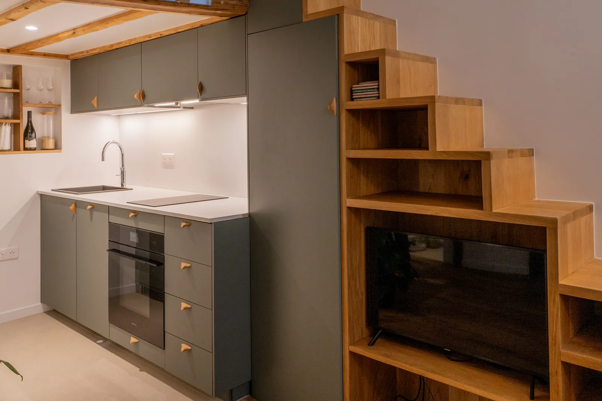
Saint-Michel Studio
Paris, 6th arrondissement, 24 m² (258 sq ft)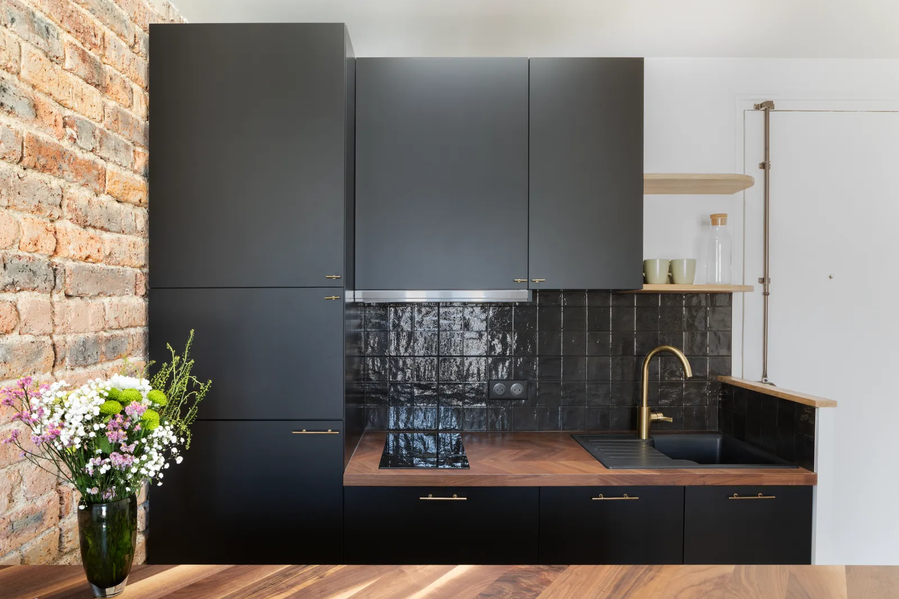
Saint-Germain-des-Prés Studio
Paris, 6th arrondissement, 27 m² (291 sq ft)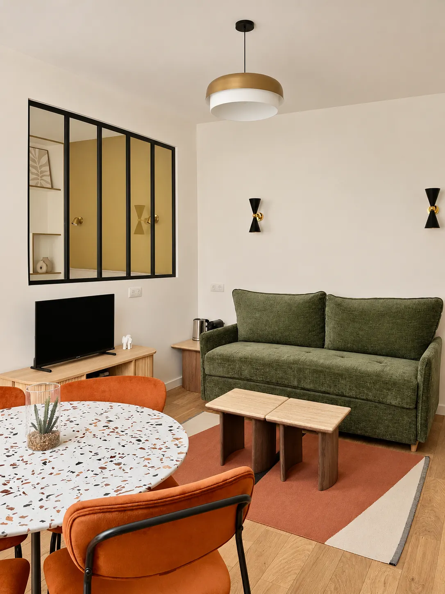
Champ-de-Mars Studio
Paris, 7th arrondissement, 30 m² (323 sq ft)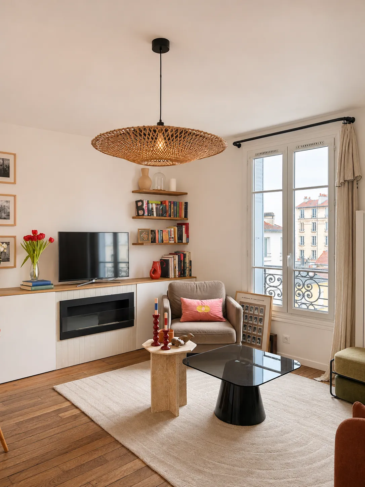
Montrouge Apartment
Montrouge, south of Paris, 46 m² (495 sq ft)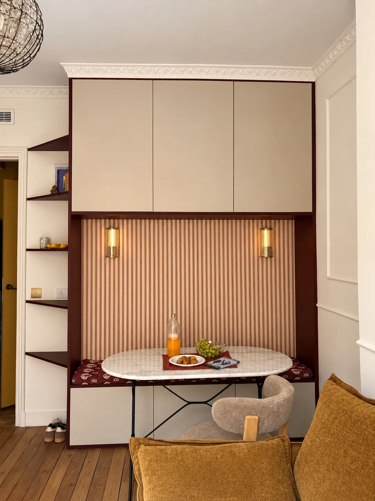
Montmartre Apartment
Paris, 18th arrondissement, 27 m² (291 sq ft)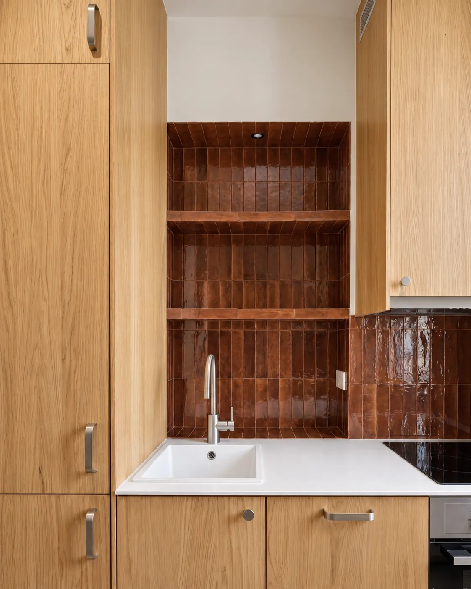
Lamarck Apartment
Paris, 18th arrondissement, 45 m² (484 sq ft)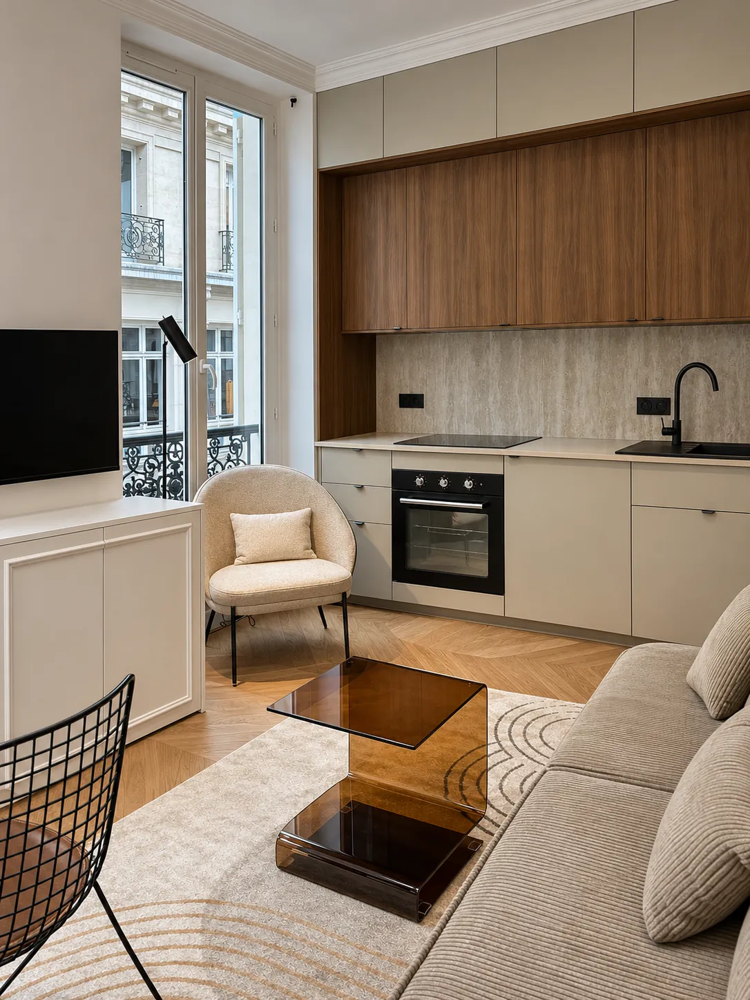
Grands Boulevards Apartment
Paris, 10th arrondissement, 30 m² (323 sq ft)
Levallois-Perret Apartment
Levallois-Perret, west of Paris, 55 m² (592 sq ft)
Boulogne-Billancourt Apartment
Boulogne-Billancourt, west of Paris, 55 m² (592 sq ft)
Bagnolet Apartment
Bagnolet, east of Paris, 65 m² (700 sq ft)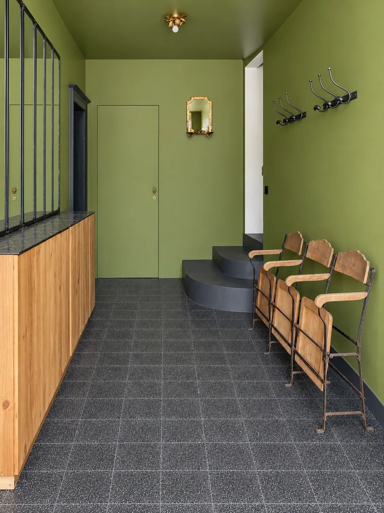
Country House in Burgundy
Burgundy, France, 150 m² (1,615 sq ft)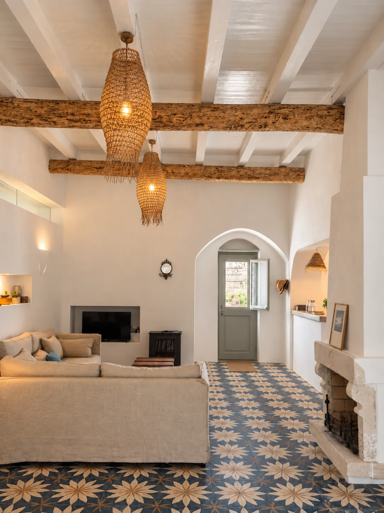
House on Sifnos
Sifnos, Greece, 160 m² (1,722 sq ft)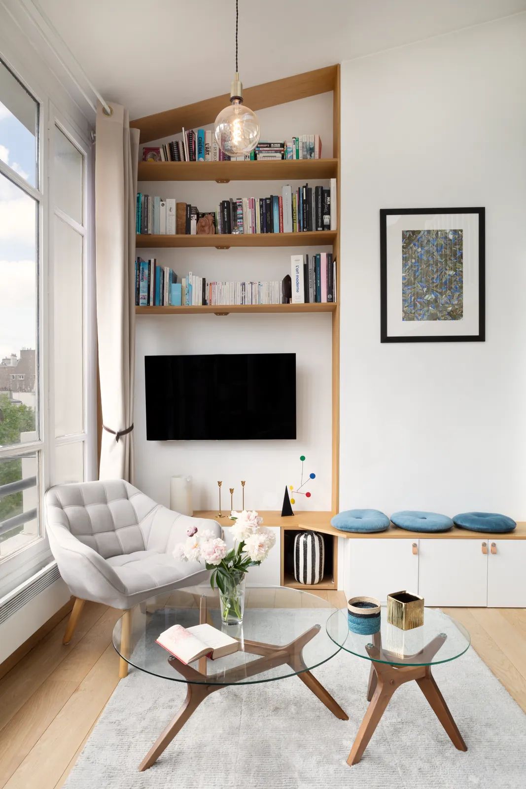
Montparnasse Apartment
Paris, 6th arrondissement, 45 m² (484 sq ft)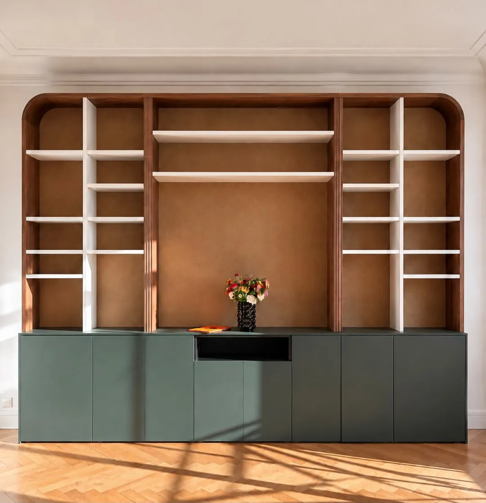
Neuilly-sur-Seine Apartment
Neuilly-sur-Seine, west of Paris, 90 m² (969 sq ft)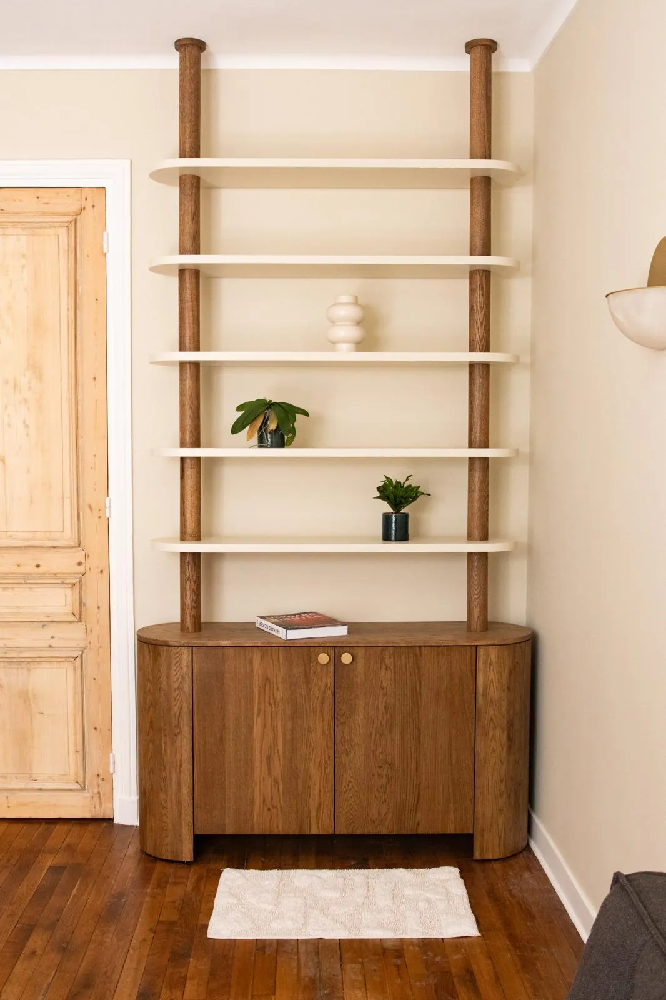
Custom Furniture
More work is on Instagram @stouls_studio.